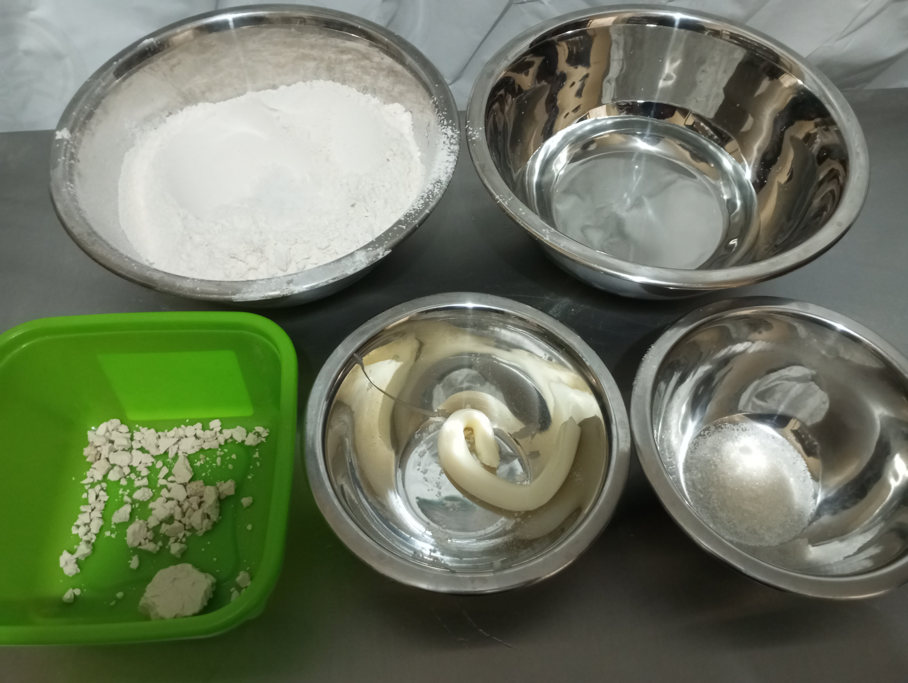

1.Preparar los ingredientes
2.Disolver el azúcar en el agua


3.Disolver la levadura en el agua
4.Mezclar la harina con la sal luego incorporar la margarina
5.Abrir un agujero en la harina y colocar dentro la levadura.
6.Integrar a mano los liquidos poco a poco hasta que no sea tan liquido luego agregar la harina de alrededor y juntarlo hasta que sea una masa.
7.Amasar en la mesa de trabajo hasta que se haya activado el gluten
8.Separar las masas con un peso de 60 a 75 gramos y luego bolear, después esperar que la masa haya doblado su tamaño.
9.Esparcir un poco de harina y aplanar con un rodillo
10.Enrollar la masa y estirarla hasta que tenga una forma alargada.
11.Estirar la masa enrollada para que sea lo mas larga posible.
12.Darle esa forma luego enrollar uno de los extremos.
13.Pasar el extremo por el agujero hasta enrollar toda ese extremo y se debe repetir lo mismo en el otro extremo.
14.Cuando este enrollada toda la masa se debe dejar leudar aproximadamente 1 hora o hasta que doble su tamaño en una lata de horno.
15.Colocar pintura de huevo encima y luego decorarle encima con semillas de ajonjolí y llevarlo a un horno precalentado a 180 grados por 20 a 25 minutos o hasta que haya cambiado su color.